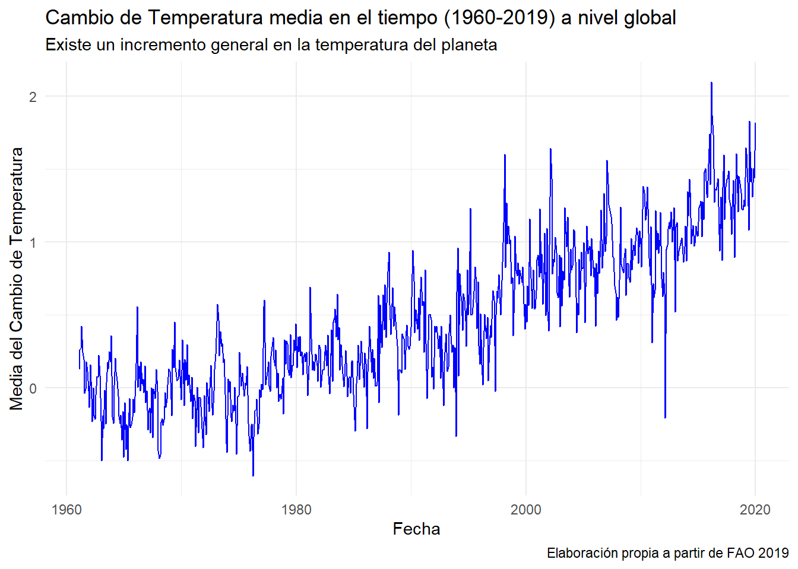

Code
library(tidyverse)
library(purrr)
library(readr)
library(dplyr)
library(psych)Se realizó una investigación breve para practicar habilidades en la manipulación de datos, iteraciones e interpretación de datos longitudinales.
Para poder realizar el análisis, se trabaja con un directorio que contiene 284 tablas de datos (.csv) con el cambio superficial promedio mensual por país entre 1961 y 2019, cada archivo contiene las variables a utilizar: Area, que indica el país o área geográfica; Months, meses; y Y1961 hasta Y2019, variables que observan el cambio promedio de temperatura observada en el año-mes.
Se requiere construir proceso automatizado en que lea el directorio donde se encuentran todos los datos, cargue las tablas y entregue el análisis solicitado: construir un flujo empaquetado en una función que reciba como argumento de entrada el directorio en el cual están las tablas de datos. Las funciones realizan las tareas de cargar los datos iterativamente, formatear las columnas y transformar la tabla de datos desde formato ancho a formato largo. Asimismo, a través de las columnas años y meses, se crea la variable date. Por último, se procede a la interpretación y visualización de los datos.
Primeramente es necesario cargar las librerías a utilizar:
library(tidyverse)
library(purrr)
library(readr)
library(dplyr)
library(psych)Luego, cargamos cada archivo .csv de nuestra carpeta data, indicando que cada archivo posee como patrón en común su tipo y conservamos sus nombres. Además, al momento de la lectura, omitimos mostrar la clase de las columnas para evitar el ruido que produce el bucle map.
folder <- "data"
csv_files <- list.files(folder, pattern = "\\.csv$", full.names = TRUE)
data_list <- map(csv_files, read_csv, show_col_types = FALSE)Construimos las funciones que nos permiten interar con un código más ordenado.
to_lower_colnames <- function(csv) {
colnames(csv) <- tolower(colnames(csv))
return(csv)
}
pivot_longer_transform <- function(csv) {
csv %>%
pivot_longer(
cols = y1961:y2019,
names_to = "year",
values_to = "temperature_change"
) %>%
mutate(year = as.numeric(sub("y", "", year)))
}Empezamos con dejar los nombres de cada columna en minúscula. Luego transformamos la lista en formato long con pivot_longer.
data_list<- map(data_list, to_lower_colnames)
data_list_long <- map(data_list, pivot_longer_transform)
#Verificamos los cambios
colnames(data_list_long[[200]])[1] "...1" "area" "months"
[4] "year" "temperature_change"Para crear la variable date, es necesario realizar otro bucle map que formatee el vector months mediante una función de eR base que posee todos los meses abreviados y aptos para tratarlos como fechas.
data_list_long <- map(data_list_long, ~ {
.x %>%
mutate(
months = match(months, month.name),
date = as.Date(paste(year, months, "22", sep = "-"))
)
})
#Verificamos formato date
first_table <- data_list_long[[1]]
class(first_table$date)[1] "Date"Luego de realizar el respectivo formateo, se procede a unir cada archivo csv en uno que contenga toda la información adecuadamente para el análisis descriptivo y visualización en el tiempo.
final_data <- data_list_long %>%
map_dfr(~ if (all(1961:2019 %in% .x$year)) {
.x %>%
select(area, months, year, temperature_change, date)
} else {
NULL
})Se realiza un análisis descriptivo, el cual incluye la media, mediana, desviación estándar, mínimo, máximo y rango intercuartil.
tabla_descriptiva <- final_data %>%
summarise(
count = n(),
mean = mean(temperature_change, na.rm = TRUE),
median = median(temperature_change, na.rm = TRUE),
sd = sd(temperature_change, na.rm = TRUE),
min = min(temperature_change, na.rm = TRUE),
max = max(temperature_change, na.rm = TRUE),
iqr = IQR(temperature_change, na.rm = TRUE),
as = skew(temperature_change, na.rm = TRUE),
cur = kurtosi(temperature_change, na.rm = TRUE)
)
tabla_descriptiva# A tibble: 1 x 9
count mean median sd min max iqr as cur
<int> <dbl> <dbl> <dbl> <dbl> <dbl> <dbl> <dbl> <dbl>
1 201072 0.486 0.419 1.08 -9.33 11.8 1.10 0.298 4.91Antes de visualizar el cambio de la temperatura en los países, creo necesario calcular la media por año, esto para mejorar la legibilidad del gráfico y su lectura.
mean_temperature <- final_data %>%
group_by(date) %>%
summarise(mean_temperatura_change = mean(temperature_change, na.rm = TRUE))Ahora sí, el gráfico:
ggplot(mean_temperature, aes(x = date, y = mean_temperatura_change)) +
geom_line(color = "blue") +
labs(title = "Cambio de Temperatura media en el tiempo (1960-2019) a nivel global",
subtitle = "Existe un incremento general en la temperatura del planeta",
x = "Fecha",
y = "Media del Cambio de Temperatura",
caption = "Elaboración propia a partir de FAO 2019") +
theme_minimal()
La media del cambio de temperatura en los 198 países a lo largo del período es de 0.486 °C. Este incremento medio, aunque parece moderado, refleja un calentamiento global significativo. Según la Food Agriculture Organization (FAO) y otras organizaciones internacionales como la IPCC (Panel Intergubernamental sobre el Cambio Climático), incluso pequeños aumentos en la temperatura media global pueden tener impactos importantes en los ecosistemas, la agricultura, y la frecuencia e intensidad de eventos climáticos extremos. Distribución del Cambio de Temperatura:
La mediana (0.419 °C) es ligeramente inferior a la media, lo que indica una distribución ligeramente asimétrica hacia la derecha. Esto sugiere que, aunque la mayoría de los países experimentaron aumentos menores en la temperatura, hubo algunos que experimentaron incrementos mayores. La asimetría positiva (0.298) y la curtosis (4.914) indican que la distribución de los cambios de temperatura tiene una cola más pesada hacia los valores extremos altos. En términos simples, aunque la mayoría de los países tuvieron un cambio de temperatura cercano al promedio, hubo algunos países que experimentaron cambios mucho mayores. Variabilidad:
La desviación estándar de 1.079 °C y el IQR de 1.105 °C muestran una considerable variabilidad en los cambios de temperatura entre los países. Esta dispersión podría deberse a factores como la geografía, las diferencias en las prácticas agrícolas, la urbanización y las políticas ambientales, que influyen en cómo se experimenta el cambio climático en diferentes regiones. El rango entre el mínimo (-9.334 °C) y el máximo (11.759 °C) es amplio, lo que sugiere que algunas áreas experimentaron un enfriamiento significativo, mientras que otras enfrentaron un calentamiento sustancial. Este rango extremo podría ser el resultado de eventos climáticos anómalos, como erupciones volcánicas o cambios regionales en la circulación atmosférica. Impactos Regionales:
Aunque estos datos proporcionan una visión global, las implicaciones del cambio climático varían considerablemente a nivel regional. Según la FAO, regiones como el Ártico han experimentado un calentamiento mucho más rápido que el promedio global, lo que coincide con la dispersión observada en los datos. Los países que han experimentado mayores aumentos en la temperatura podrían estar enfrentando desafíos más pronunciados en la agricultura, la seguridad alimentaria y la salud pública debido a la mayor frecuencia de olas de calor y la alteración de los patrones de precipitación. Conclusión General: Estos estadísticos descriptivos confirman que, durante el período de 1961 a 2019, el planeta ha experimentado un calentamiento generalizado con una considerable variabilidad entre los países. Este fenómeno está en línea con las observaciones científicas y las preocupaciones de la FAO sobre los impactos del cambio climático en la producción agrícola, la biodiversidad y las poblaciones vulnerables. Es crucial que las políticas globales se enfoquen en mitigar estos efectos y en adaptar las prácticas humanas a las nuevas realidades climáticas.
Para más detalles sobre los datos y análisis del cambio climático y sus impactos, puedes revisar la fuente oficial de la FAO.